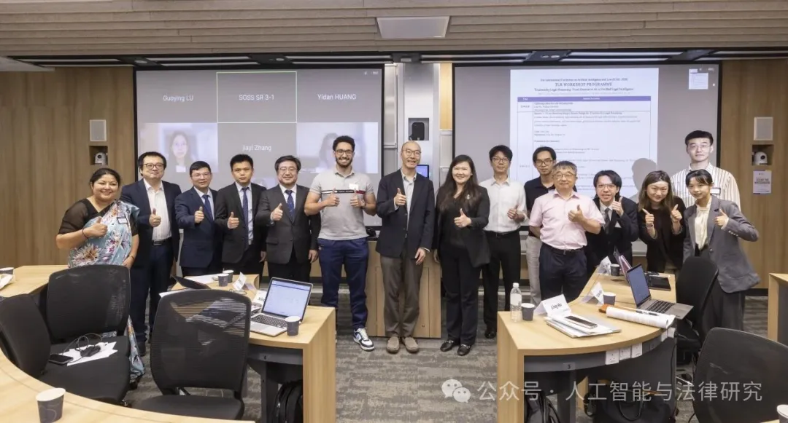
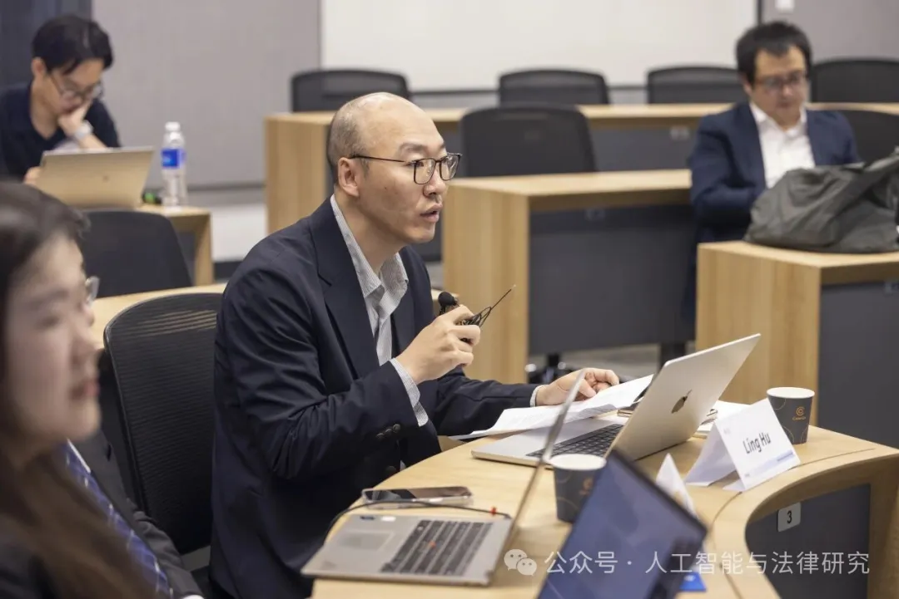
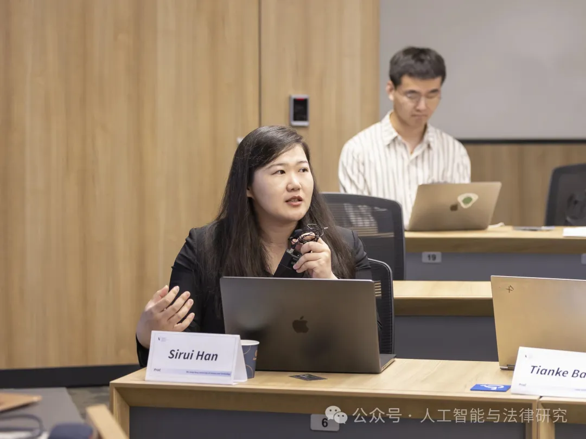
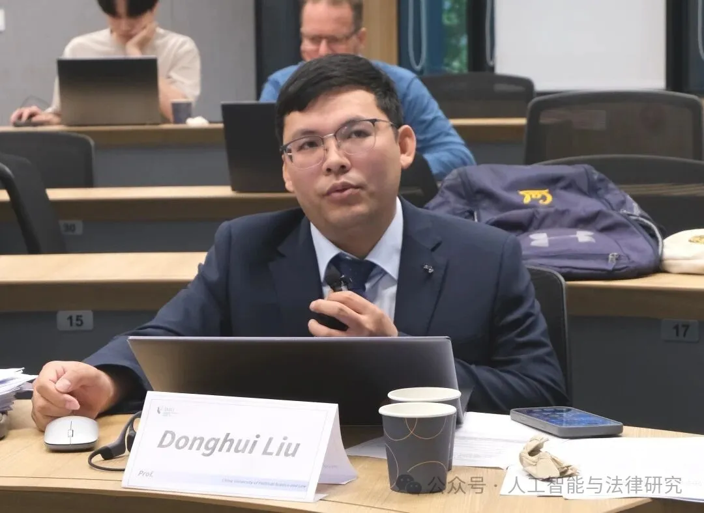
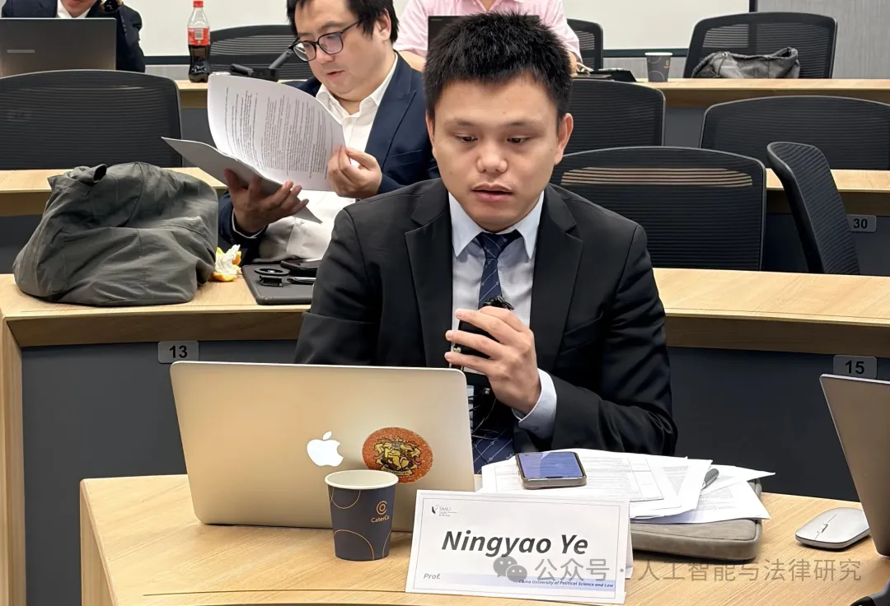
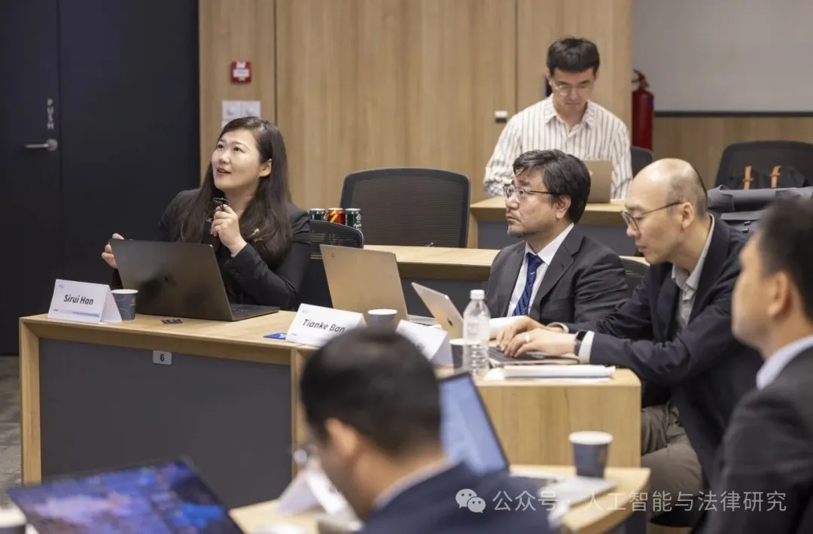

Organised by Sirui Han’s team at HKUST, the Trustworthy Legal Reasoning Workshop at ICAIL 2026 brought together legal and AI researchers at Singapore Management University. Twelve papers across three sessions examined model evaluation, professional practice, rights protection and governance. Discussions highlighted human baselines, context-sensitive evaluation and mechanisms for review and correction.
Chaired by Professor Sirui Han, with Professors Ling Hu and Ningyao Ye as discussants, the first session presented six papers on evaluation and model design. Topics included authority in tax-law evaluation, public legal services, judicial citation, legal reasoning models, premature termination of reasoning and privacy-aware synthetic legal data. Discussion emphasized real legal tasks and human baselines for assessing model capabilities.



Chaired by Professor Ling Hu, with Professors Donghui Liu and Tianke Ban as discussants, the second session presented three papers on lawyer-led AI workflows, responses to challenges against automated decisions, and emotional manipulation in AI companionship. Discussion emphasized the need for systems that help users understand, challenge and correct outputs.

The third session, chaired by Professor Ling Hu with Professors Donghui Liu and Tianke Ban as discussants, addressed deepfake evidence in court, competition-law responses to model appropriation, and copyright disclosure for AI-generated content. These topics connected technical research with rights protection, market order and institutional responsibility.

In closing, Sirui Han explained that the workshop grew out of the HKUST team’s work on local large language models for the Hong Kong SAR Government, where safety and trustworthiness are essential. She described approximately 170,000 government personnel with potential needs, around 800,000 public-facing users and around 50,000 civil servants using deployed models. Trustworthy legal reasoning, she argued, is a governance-native approach spanning data, benchmarks, model design, evaluation, professional duties and governance, rather than a single feature added at the end. As models enter professional workflows, correct, diligent and trustworthy operation becomes essential. The workshop called for sustained interdisciplinary exchange linking technical evaluation with review, correction and accountability in legal practice.
